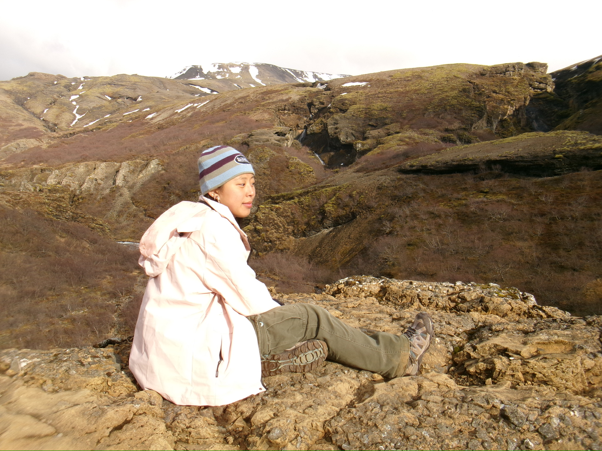
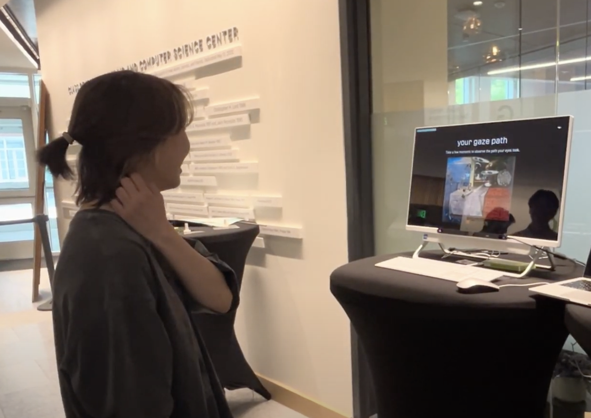
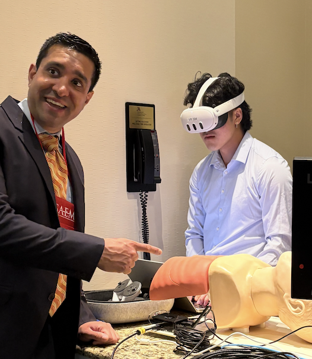
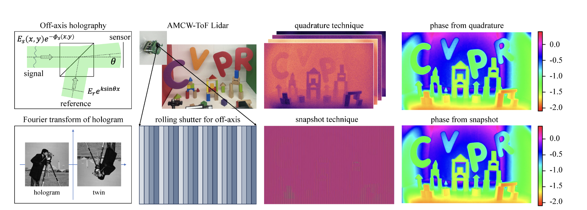
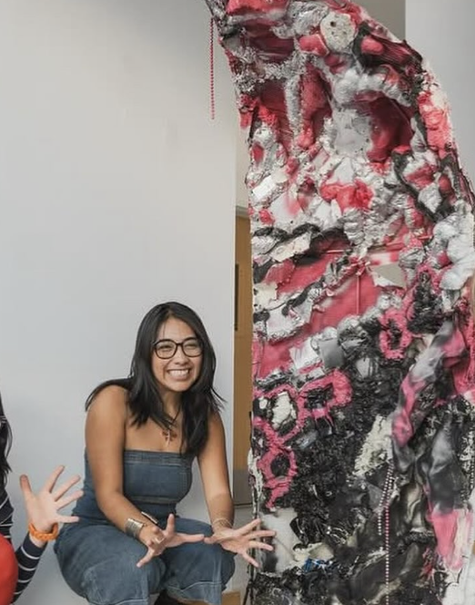
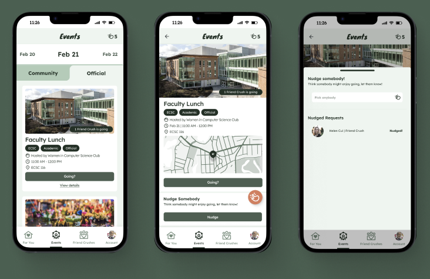
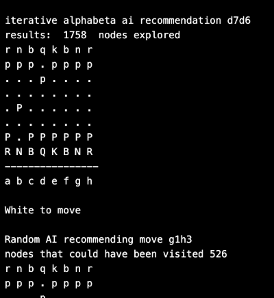
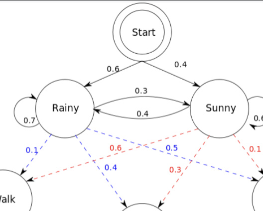

Hi,
I'm Helen
a Product Manager,
Designer,
and Researcher
Contact
About

I'm Helen Cui
I'm a product manager, developer, designer, and researcher (bit of a mouthful). I’m a junior at Dartmouth College studying Computer Science and Studio Art, with a minor in Digital Arts.
I love communicating and translating the technical to the non-technical, leveraging my high level understanding with a background in Computer Science to make meaningful impacts on my teams and users.
Wanna chat more? Reach out at helcui04[at]gmail.com
Skills
Professional Skills
My languages, tools, and skills
Python, C, Java, Bash
95%
SQL
75%
Hugging Face
55%
PyTorch
55%
Agile
85%
Human Computer Interaction
75%
UI/UX
75%
Figma
75%
Work

Dalí Museum: How Do I Look

AR AI Airways: Intubation Training Solution for Rural Vermont Doctors

Rendering and Imaging Sciences Lab (RISC): Depth Diffusion Modeling
Stamps Scholarship Recipient: Art and AI

Project Greenlight Grant Recipient:
Project Greenlight Grant Recipient:
Physicality and Hedonism

Nudge: Nonchalantly to meet new friends at Dartmouth

COSC76: Minimax ChessBot
COSC50: Tiny Search Engine
